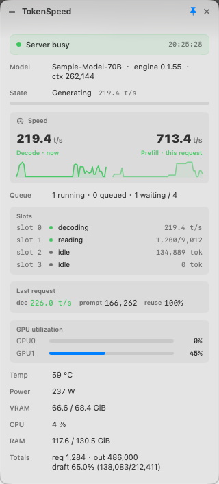

How fast is it decoding right now?
TokenSpeed keeps that answer in the macOS menu bar: one number from your local Strata server, plus a panel for the details — and an honest second state for the moments when there is no number to show.
Three text states, four icon states
The number is the interesting case, but the other two decide whether you trust it. A stale speed shown as a live one is worse than no number at all, so TokenSpeed never does it.
| State | Bar shows | What it means |
|---|---|---|
| fetch failed | ! | The server is unreachable, down, or the key was rejected. Go look. |
| generating | 219.0t/s | Live decode throughput from live.tok_s, falling back to the last
request's value. Capped at 999.9 so the bar never grows. |
| idle | idle | Nothing is being generated. The server still reports its last measured speed — TokenSpeed ignores it rather than passing it off as current. |
Every number in the panel carries its source — now, this
request, or last request — and decode throughput is never merged with
prompt processing or latency. A throughput figure without a source is not a fact.
The panel
Click the item for the details you would otherwise curl for:
- Model, engine version, context window
- Request phase bar — reading in blue, generating in green, growing per poll
- Decode and prefill speed, each with a sparkline of Strata's own history
- Queue depth and a row per slot, in whatever shape that slot is currently in
- Last request: decode, prompt, cache reuse
- Per-GPU utilisation, temperature, power, VRAM; CPU, RAM, lifetime totals
Pick the fields you want in Settings, in English, Simplified or Traditional Chinese. Settings apply without relaunching.

Read-only by construction
The client issues two requests: GET /metrics for everything it displays,
and GET /health as a key-free liveness check. It never calls an endpoint that
changes server state — no /load, no /unload, no
/slots/0?action=… — and it does not poll the request-body monitor endpoints.
An observer should not be able to change the thing it observes.
The API key goes in the settings field (write-only: no path reads it back into the UI)
or in the STRATA_API_KEY environment variable. It never reaches a log, the
menu bar, or the source; when it appears in an error message it is masked to its first
four characters.
Install
macOS 13 or later, one Strata server reachable over the network, no third-party dependencies — SwiftPM plus AppKit and SwiftUI.
swift build -c release # or: swift test, or: zsh tools/make_app.sh
zsh tools/make_app.sh # TokenSpeed.app: LSUIElement, icon, version, ad-hoc signedTo keep it resident across logins, via a LaunchAgent that takes the key from your environment instead of the repository:
export STRATA_API_KEY=<your server key>
zsh tools/install_launch_agent.shMeasured cost on an Apple Silicon laptop: about 0.15 % CPU idle with the panel closed, 2.4 % average while generating with it open. The pulse ring is a Core Animation layer, and every panel subtree sits behind a content fingerprint.